NLG MMA200
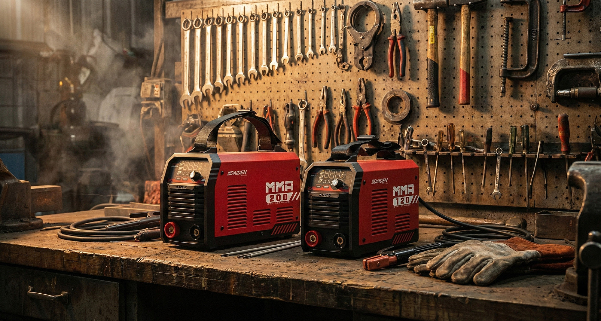
Elevating Design Value to Exceed Client Expectations
Niagamas Lestari Gemilang is an industrial machinery company based in Indonesia. I provided exterior redesign services for their DAIDEN brand for the Japanese market. The original product featured a metal sheet exterior, and I focused on redesigning only the front panel with a plastic material while retaining all other metal components. This design approach not only modernized the product's appearance but also successfully reduced production costs for the client. Moreover, the new plastic front panel enhanced the product's visual identity and brand presence, further strengthening its competitiveness in the Japanese market.
NLG has commissioned me to redesign and revitalize their long-standing bestselling DAIDEN brand welding machines, specifically for the Japanese market. The core objective is to breathe new life into the product's established "Retro Japan" aesthetic, elevating it into a bold, modern, and eye-catching design.
The primary challenge lies in balancing the aesthetic goals with strict manufacturing cost constraints. While the client desires a visually striking modernization of their brand image, they have imposed tight limitations on new tooling investment. Therefore, the core task is to develop a strategic design approach that delivers a bold, modern upgrade while preserving the brand's DNA and meeting these constraints.
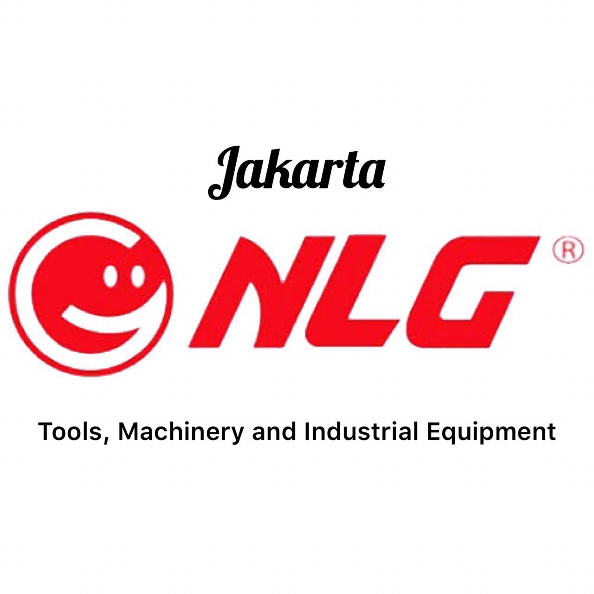
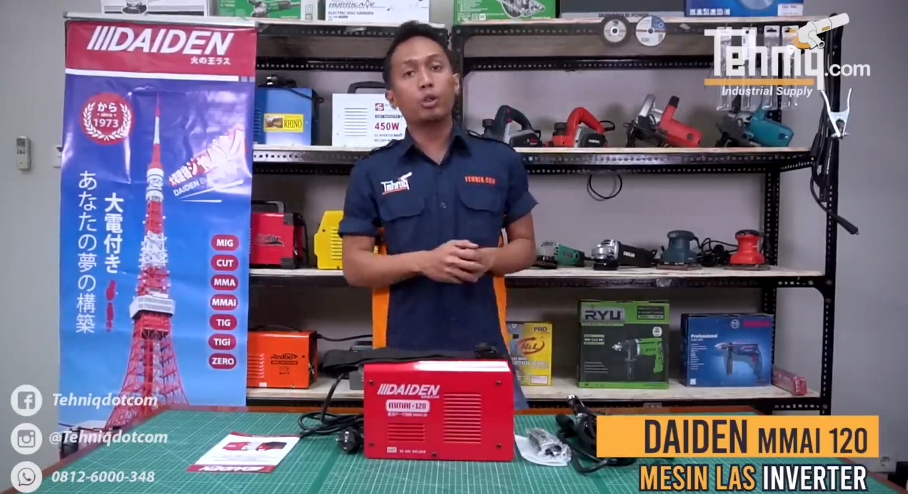
DAIDEN is a brand targeted at the Japanese market.
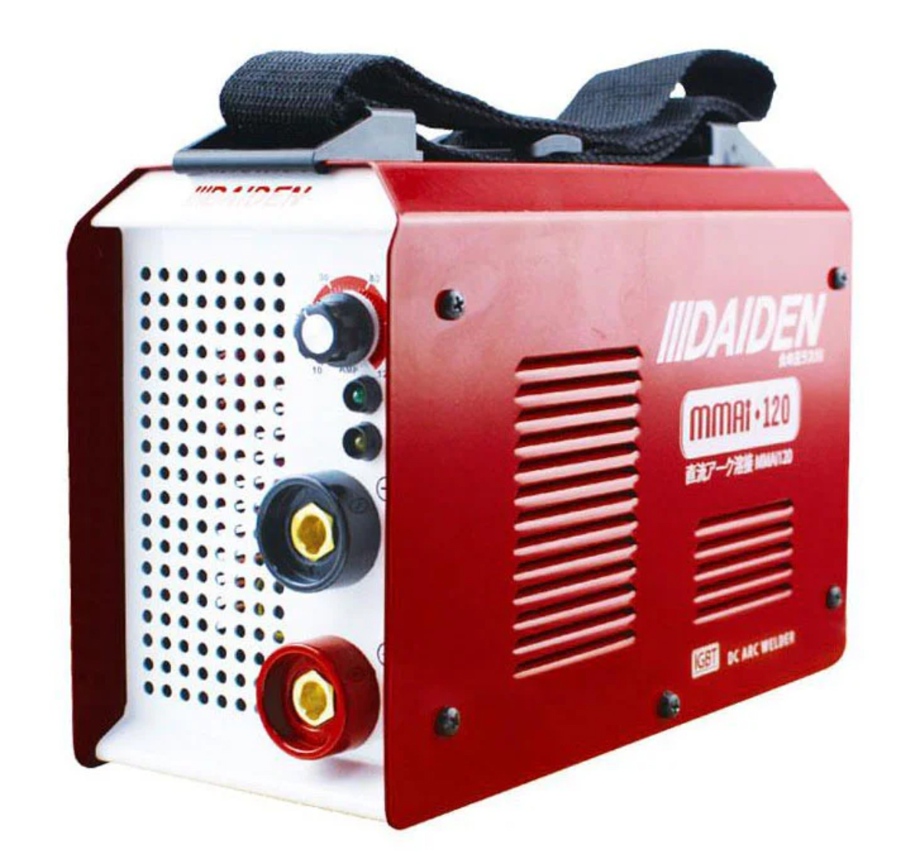
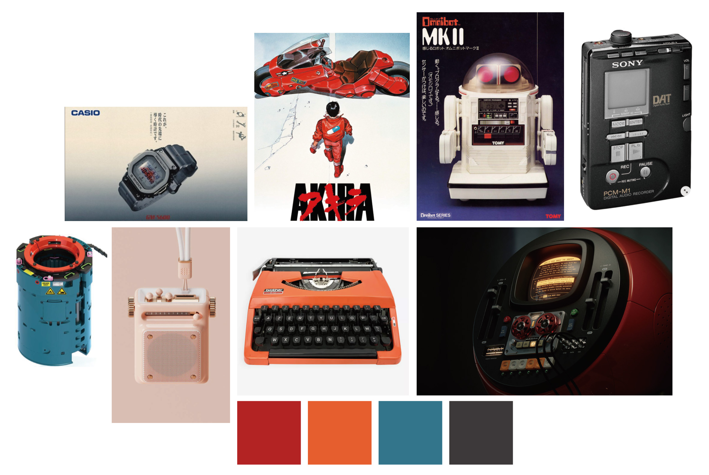
Before starting the design process, I engage in thorough discussions with clients to fully understand the product's specifications, usage scenarios, and operation methods. For new types of products I haven't worked with before, comprehensive communication in the early stages is crucial. This not only ensures that the client's expectations are precisely met but also effectively reduces the time spent on subsequent revisions, ensuring a smooth design process.
Protecting Core Aesthetics in Manufacturing Realities
Bridging the Gap Between Client and Manufacturer
As an experienced industrial designer, my role extends beyond ideation to crucial vendor management. Clients often lack the technical manufacturing experience required to negotiate with suppliers, making it easy to compromise the original vision for production convenience. I act as the technical liaison and gatekeeper—communicating design specifications clearly, balancing manufacturing constraints (DfM), and ensuring the final product stays true to the client's expectations without sacrificing aesthetic or functional integrity.
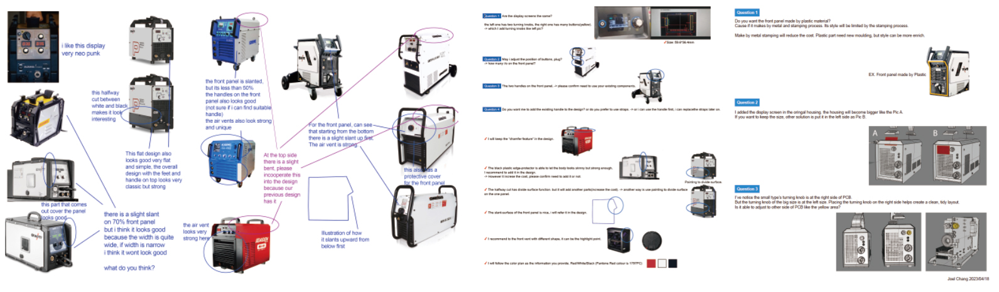
Engaged in close collaboration with the client and the manufacturing plant (China) to identify design limitations and determine the adjustable scope.
From Concept Exploration to Production-Ready Design
The client places great importance on the product's appearance, requiring a design that reflects the classic 1980s Japanese style, while incorporating modern elements, avoiding being too avant-garde or outdated. During the design process, I gathered extensive competitive product data and engaged in in-depth discussions with the client to understand their specific needs and ideas. This communication helps ensure a more accurate understanding of the client's design expectations.
In the early proposal phase, I create multiple 2D design drafts and present both bold and conservative options. Through discussions with the client, we gradually narrow down the design direction. Subsequently, I engage with manufacturing partners to discuss details such as part count, production feasibility, and assembly yield, ensuring the design is optimized for mass production.
The process moves from open, divergent thinking to a more focused, convergent approach, which helps us better understand the client's preferences and needs, ensuring the final design is both creative and practically feasible.
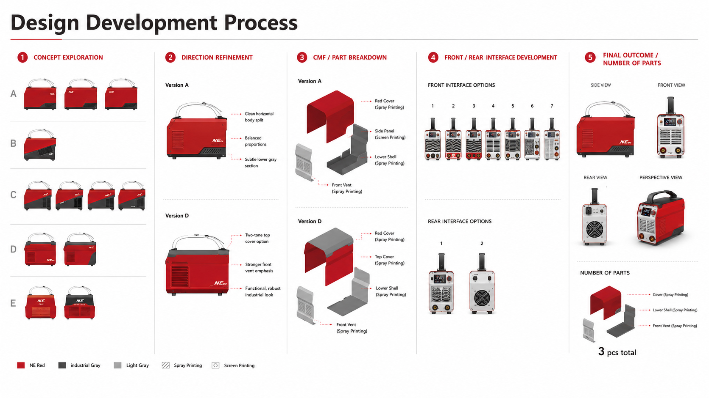
Considering the client's desire to reduce mold costs, we decided to share the metal sheet components for the main body and design the front cover in plastic. However, to maintain design consistency, I redesigned the screen-printing effect and details of the metal sheet components, skillfully blending the vintage Japanese style with the shape of the front cover. Throughout this process, I made several hand-drawn refinements, ultimately presenting six carefully crafted proposals for the client to choose from, ensuring each one perfectly aligned with their design needs. Additionally, I also designed multiple options for the screen panel Mylar.
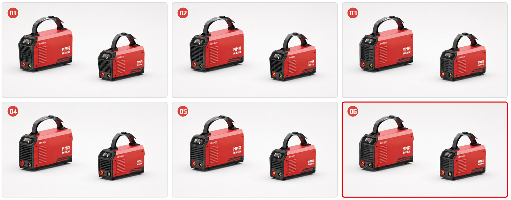
Given the demanding environments welding machines operate in—often placed outdoors or directly on the ground—I prioritized a highly durable, scratch-resistant coarse texture (MT-11020) for the main body. To prevent this heavy-duty equipment from feeling purely utilitarian, I introduced selective polished accents and high-contrast screen printing on the powder-coated metal casing. This strategic CMF approach ensures the product withstands harsh conditions while projecting a premium, sophisticated aesthetic.
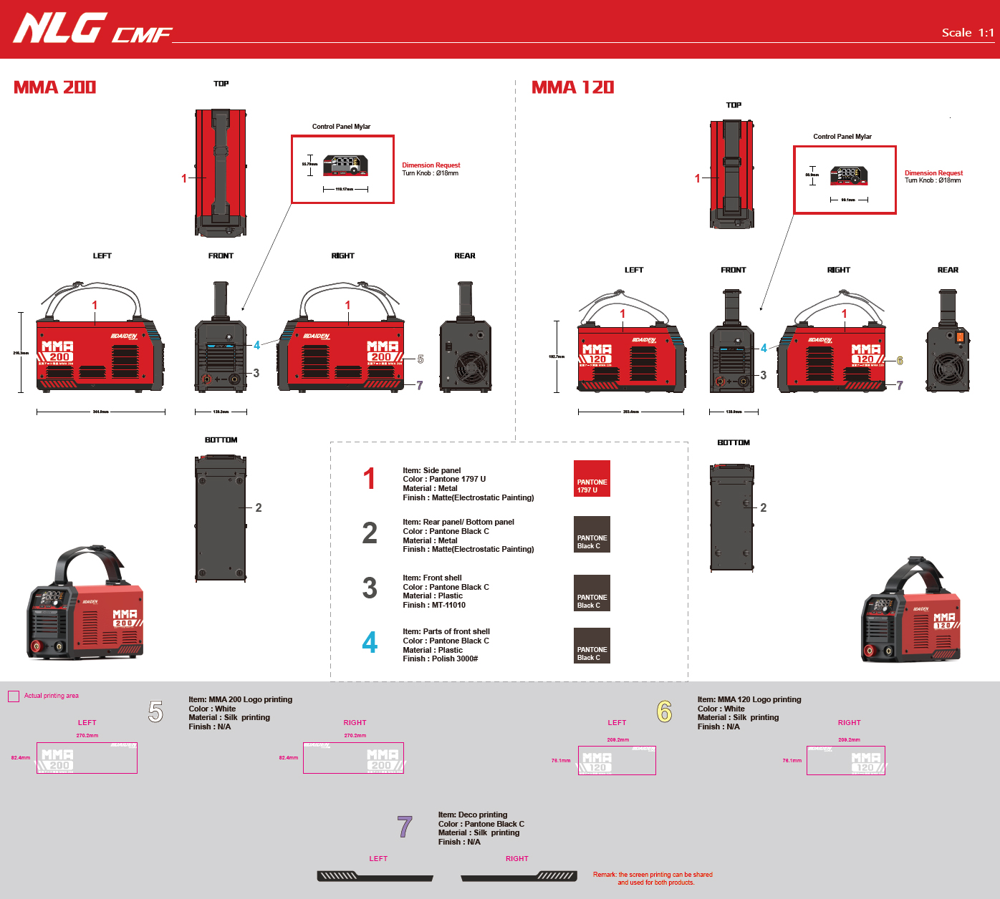
A classic, rugged welding machine — fundamentally transformed. The new design rises from the existing foundation, retaining the original sheet metal components while injecting bold new energy into its form. Guided by brand continuity, the redesign sharpens operational clarity, introduces an intuitive digital interface, and delivers a striking visual presence. This is not just a facelift — it is a rebirth of product identity.
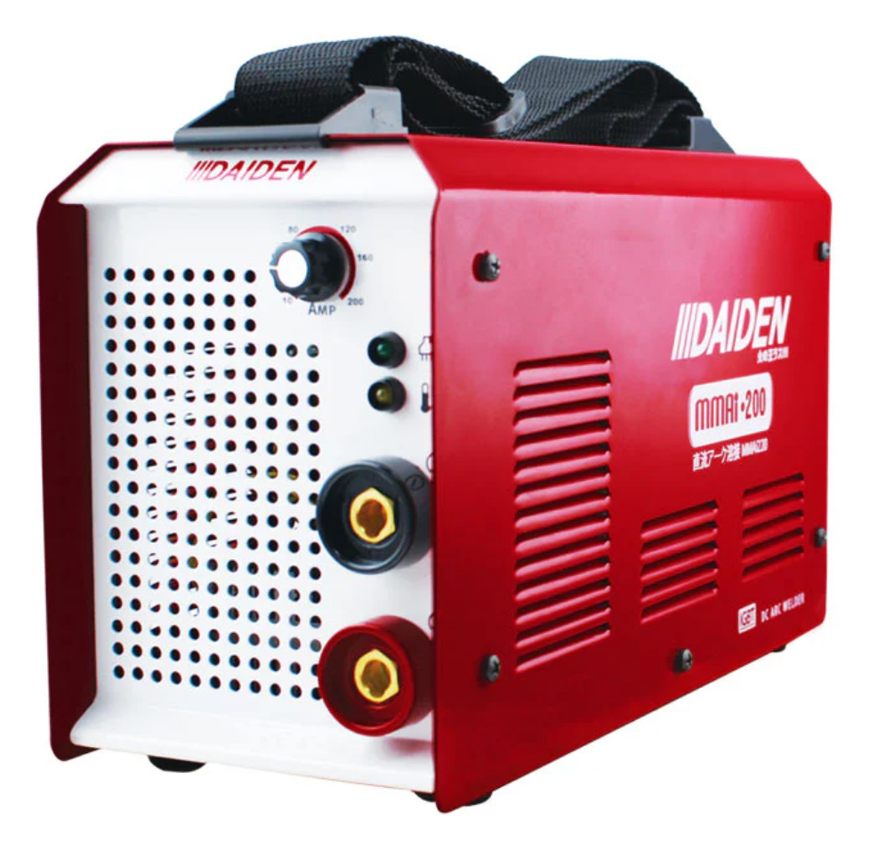
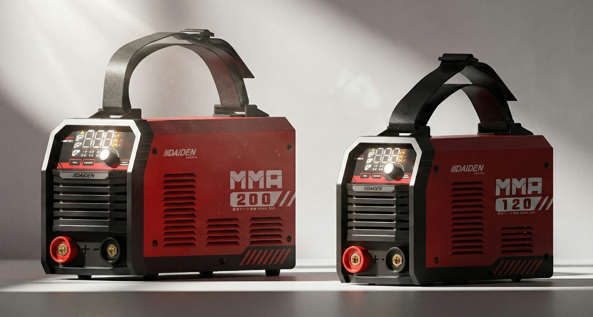
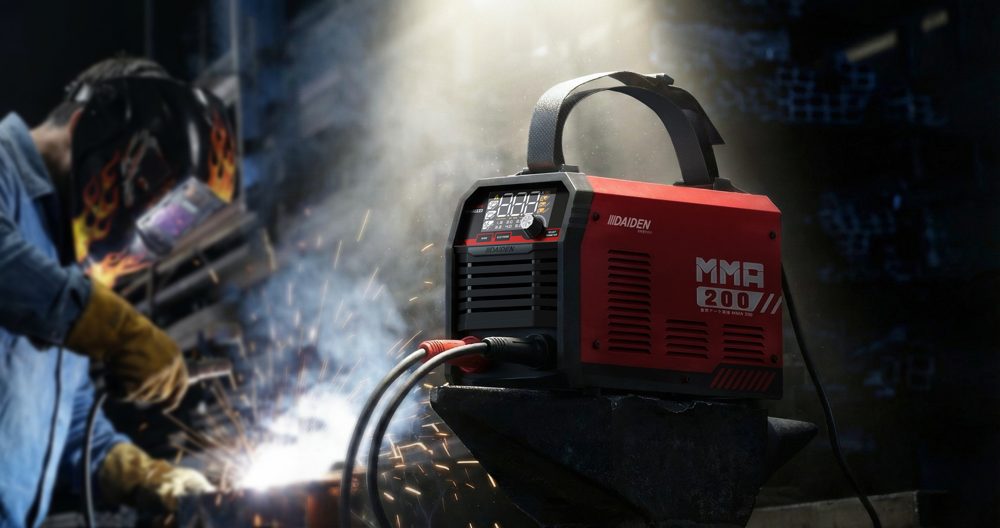
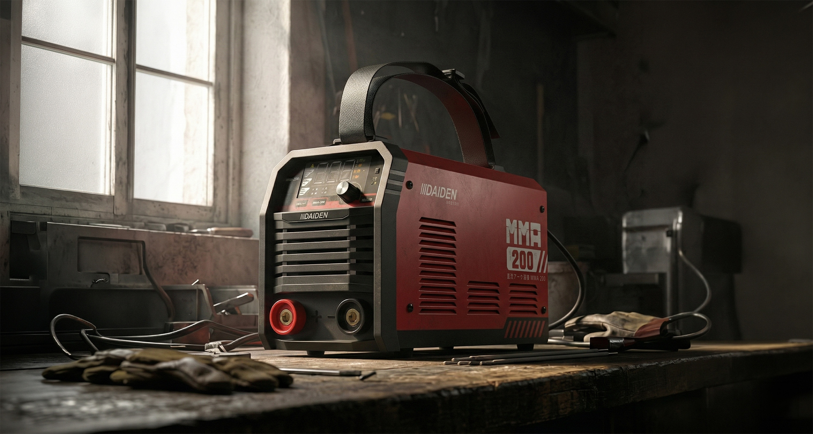